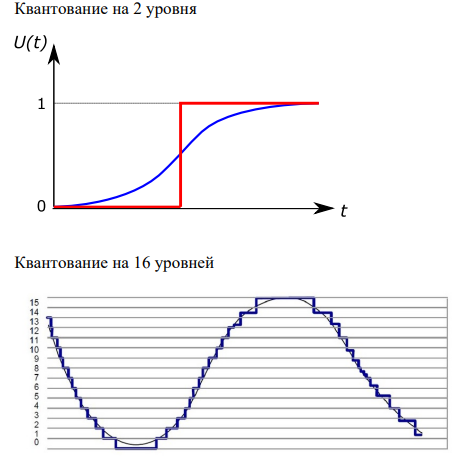

USB-флеш-накопитель. На переднем плане видна микросхема NAND-флеш-памяти, на заднем — её контроллер.
ОГЛАВЛЕНИЕ Воробьев Влад 4128
Информационная система – это взаимосвязанная совокупность средств, методов и персонала используемых для хранения, обработки и выдачи информации в интересах достижения поставленной цели. Структура ИС:
Информационные технологии - это процесс, использующий совокупность средств и методов сбора, обработки и передачи данных (первичной информации) для получения информации нового качества о состоянии объекта, процесса или явления (информационного продукта). Цель информационной технологии - производство информации для ее анализа человеком и принятия на его основе решения по выполнению какого-либо действия.
Информационная технология тесно связана с информационными системами, которые являются для нее основной средой.
graph TD;
A(Средства реализации ИТ)-->Методические;
A-->Технические;
A-->Информационные;
A-->Программные;
A-->Математические;
Пример: стандартизация ISO (International Standards Organization) – органзиация выпуска стандартов, создавшая базовую эталонную модель взаимодействия открытых систем (OSI – Open System Interconnection).
Информационный процесс — процесс получения, создания, сбора, обработки, накопления, хранения, поиска, распространения и использования информации.
graph LR;
A(Базовые информационные процессы)-->B(Извлечение информации);
A-->С(Хранение Информации);
A-->D(Транспортирование информации);
A-->F(Представление и использование информации);
A-->G(Обработка информации);
Примерами прикладных ИТ являются:
Можно выделить ряд базовых ИТ:
Информационная технология обработки данных предназначена для решения задач, по которым имеются необходимые входные данные и известны алгоритмы, а также стандартные процедуры их обработки. Такие задачи называются хорошо структурированными, или формализованными.
В управленческой деятельности данный вид технологии используется для автоматизации рутинных, постоянно повторяющихся операций с целью повышения производительности труда персонала. Эта технология подразумевает выполнение вычислительных процедур над данными, их группировку, сортировку, агрегирование (реализуется в форме расчетов итоговых или средних значений). В сфере управления она используется, например, для обработки данных над операциями, производимыми фирмой, и создания разного рода отчетов.
Эта технология ориентирована на работу в среде информационной системы управления. Она направлена на создание различных видов отчетов. Ее целью является удовлетворение информационных потребностей сотрудников, имеющих дело с принятием решений.
Например: регулярные и специальые отчеты
Использование отчётов для поддержки управления оказывается особенно эффективным при реализации управления по отклонениям. Оно предполагает, что главным содержанием получаемых управленцем данных должны являться отклонения состояния хозяйственной деятельности организации от запланированного состояния.
Для обеспечения своевременности принятия решений на уровне управленческого контроля информация должна быть представлена в агрегированном виде и в динамике (во времени), чтобы просматривались тенденции изменения данных. Кратко говоря, по графику.
В этой технологии необходимо:
Цель: рациональная автоматизация управленческого труда и наилучшего обеспечения управленцев информацией.
Основные компоненты
| Компьютерные | Некомпьютерные |
|---|---|
| База данных | Видеоконференции |
| Word | Факс |
| Excel | ... |
| Электронный календарь | |
| ... |
Данный вид технологии направлен на организацию и поддержку информационных процессов как внутри организации, так и при реализации взаимодействия с внешней средой с использованием современных аппаратных и программных средств. Последние бывают особенно востребованы в крупных компаниях, когда отдельные подразделения фирмы территориально удалены друг от друга.
Эта технология предусматривает взаимодействие человека и вычислительного звена.
В роли объекта управления выступает вычислительное звено.
Человек как управляющее звено задает входные данные и оценивает полученный результат вычислений. Если результат его устраивает, решение принимается, если нет, то вводит в вычислительное звено измененные исходные данные. Этот процесс является итерационным и может быть завершен по воле человека.
Пример: Решение задачи определения наиболее выгодной производственной программы выпуска нескольких видов продукции при заданных ограничениях на ресурсы.
flowchart LR
A[Вычислительное звено] -- Результат вычислений --> B[Человек];
B -- Ввод новых данных --> A;
B -- Решение выбрано ---> C[Итог];
К особенностям данной технологии следует отнести ее ориентацию на решение слабо структурированных задач, а также широкое использование математических моделей, предназначенных для описания и оптимизации некоторого объекта или процесса.
Состоят такие ИТ из баз данных и моделей. Модели, базируясь на математической интерпретации проблемы, при помощи определённых алгоритмов способствуют нахождению информации, полезной для принятия правильных решений.
Пример: модель линейного программирования даёт возможность определить наиболее выгодную производственную программу выпуска нескольких видов продукции при заданных ограничениях на ресурсы.
Типы моделей:
используются на высших уровнях управления для установления целей организации, объемов ресурсов, необходимых для их достижения, а также политики приобретения и использования этих ресурсов. Для стратегических моделей характерны значительная широта охвата, множество переменных, представление данных в сжатой агрегированной форме. Горизонт планирования в стратегических моделях, как правило, измеряется в годах.
применяются управляющими среднего уровня для распределения и контроля использования имеющихся ресурсов. Среди возможных сфер их использования следует указать: финансовое планирование, планирование увеличения продаж и т.д. Временной горизонт, охватываемый тактическими моделями, ≈ от одного месяца до двух лет.
Используются на низших уровнях управления для поддержки принятия оперативных решений с горизонтом, измеряемым днями и неделями. Возможные применения этих моделей включают в себя календарное производственное планирование, управление запасами и т.д.
Cостоят из совокупности модельных блоков, модулей и процедур, реализующих математические методы. Сюда могут входить процедуры линейного программирования, статистического анализа временных рядов, регрессионного анализа и т.п. Модели можно классифицировать по:
Главная идея использования технологии экспертных систем заключается в том, чтобы получить от эксперта его знания и, загрузив их в память компьютера, использовать всякий раз, когда в этом возникнет необходимость.
Экспертные системы основаны на использовании искусственного интеллекта. Экспертные системы представляют собой компьютерные программы, трансформирующие опыт экспертов в какойлибо области знаний в форму эвристических правил.
ИТ экспертной системы состоит из:
База знаний - содержит факты, описывающие проблемнюу область, а также логическую взаимосвязь этих фактов. Центральное место в базе знаний - правило. Правило описывают, что делать в конкретной ситуации, и состоит из двух частей:
Используемые в система правила образуют систему правил.
Интерпретатор - часть системы, произволяющая в определенном порядке обработку знаний, находящихся в базе знаний.
Модуль создания системы - служит для создания набора правил. Существует два подхода в основу модуля создания системы:
Производительность компьютера обычно измеряется во FLOPS`ах (количество операций с плавающей точкой в секунду).
FLOPS — FLoating-point Operations Per Second
Cреднестатистический современный настольный компьютер имеет производительность порядка 0.1 терафлопса. К суперкомпьютерам в настоящее время принято причислять системы с вычислительной мощностью более 10 терафлопсов. На сегодняшний день достигнута производительность компьютерной системы, превышающая 33,8 петафлопсов. Использование суперкомпьютеров считают одним из важных показателей технологической вооружённости
Производительность компьютера зависит от многих факторов, но в наибольшей степени определяется характеристиками процессора: тактовой частотой, объемом кэш-памяти, разрядностью и т.д. Важную роль играют многоядерность и многопоточность.
На протяжении многих лет основным способом повышения производительности было постоянное увеличение тактовой частоты. Тактовая частота характеризует кол-во вычислений, которые процессор может выполнить за одну секунду. Но даже при одинаковой тактовой частоте производительность компьютера может отличаться.
Большинство современных процессоров имеют тактовую частоту от 900 до 4700 МГц. Однако с увеличением частоты начинает нелинейно возрастать тепловыделение, что следует принимать во внимание. Поэтому дальнейшие усилия по увеличению производительности компьютера были направлены, в частности, по пути параллельных вычислений и на разработку многоядерных процессоров. Сегодня уже подавляющее большинство современных компьютеров используют многоядерные процессоры. В многоядерных системах потоки могут выполняться одновременно, при этом каждое ядро будет обрабатывать отдельный поток.
Кеш - промежуточный буфер с быстрым доступом к нему, содержащий информацию, которая может быть запрошена с наибольшей вероятностью. Он располагается непосредственно на ядре и служит для повышения производительности, так как в нём данные обрабатываются со значительно большей скоростью, чем в случае с оперативной памятью.
Кэш-память подразделяется на несколько уровней:
Винчестер содержит несколько магнитных дисков. Плотность записи накопителей на жестких дисках (HDD) определяется размером и конструкцией головок чтения/записи.
Магниторезистивный эффект используется только для построения головки чтения. Для записи используются другие головки.
Принцип работы головки: В составе магниторезистивной головки чтения имеется добавочная обмотка, в которой создается постоянный измерительный ток. В момент, когда головка проходит над зоной намагниченности, сопротивление этой обмотки изменяется, а соответственно изменяется падение напряжения на ней. Это и происходит при считывании данных – реактивное сопротивление такой головки оказывается различным при прохождении над участками с различными значениями остаточной намагниченности. Таким образом, магниторезистивная головка представляет собой резистивный датчик магнитного поля.
Принцип работы флеш-памяти основан на изменении и регистрации электрического заряда в изолированной области («карман») полупроводниковой структуры.
USB-флеш-накопитель. На переднем плане видна микросхема NAND-флеш-памяти, на заднем — её контроллер.
Плюсы: компактность, дешивизна, механическая прочность, устойчивость к внешним воздействиям, большой объём (128 Гб), высокая скорость работы, низкое энергопотребление, информация может многократно обновляться: чтение - любое кол-во раз, запись примерно 100 тысяч раз.
Минусы: ограниченный ресурс носителей, а также чувствительность к электростатическому разряду
По сравнению с традиционными жёсткими дисками твердотельные накопители имеют меньший размер и вес, являются бесшумными, а также многократно более устойчивы к повреждениям (например, при падении) и имеют гораздо бóльшую скорость производимых операций. В то же время, они имеют в несколько раз бóльшую стоимость в пересчёте на гигабайт и меньшую износостойкость (ресурс записи).
Хранение информации основано на флеш-памяти.
Минимальный размер доступной для чтения информации, одна ячейка. Процесс чтения очень быстр, так как твердотельные накопители всегда лучше читают, чем пишут. По этой причине жесткий диск SSD прилично ускорит загрузку операционной системы и запуск приложений, так как в этом случае большинство происходящих операций - чтение.
Процесс записи отличается от процесса чтения. Минимальный размер доступной информации аналогичен процессу чтения. Если ячейка пуста, запись идет напрямую. Если ячейка уже содержит информацию и требуется перезапись, ячейка сначала очищается. Проблема в том, что очищение производится на уровне блоков, а не ячеек.
Оптическими запоминающими устройствами, или оптическими накопителями, называются устройства, в которых запись данных на носитель и считывание с него осуществляются с помощью лазера, генерирующего монохроматические электромагнитные колебания оптического диапазона в виде узконаправленного пучка света.
Носителями данных ЗУ служат оптические компакт-диски (Compact Disks – CD)
При считывании информации с оптических дисков луч лазера, установленного в дисководе, падает на поверхность вращающегося диска и отражается. Так как поверхность оптического диска имеет участки с различными коэффициентами отражения, то отраженный луч также меняет свою интенсивность (логические 0 или 1).
Интерфейс для HDD: в основном SATA.
Идея: несколько дисков, объединенных вместе, могут не только увеличить объем накопителя, но и повысить надежность хранения информации, а также скорость передачи данных. Предназначен для повышения надёжности хранения данных и/или для повышения скорости чтения/записи информации.
RAID – это массив из нескольких дисков, управляемых контроллером, взаимосвязанных скоростными каналами и воспринимаемых внешней системой как единое целое. В зависимости от типа используемого массива может обеспечивать различные степени отказоустойчивости и быстродействи
Данные разбиваются на блоки (размер блока можно задавать при создании массива) и затем записываются на отдельные диски.
Также этот режим называется «чередование», поскольку при записи блоков данных чередуются диски, на которые осуществляется запись. Соответственно, читаются блоки тоже поочерёдно. Таким образом, происходит параллельное выполнение операций ввода/вывода, что приводит к большей производительности.
Основным плюсом данного режима является высокая скорость передачи данных. В этом режиме избыточности нет. Если один из дисков выходит из строя, то, очевидно, теряется вся информация.
Достоинство – скорость считывания файлов увеличивается в n раз, где n — количество дисков. Однако, такая оптимальная производительность достигается только для больших запросов, когда фрагменты файла находятся на каждом из дисков.
Недостаток – увеличивается вероятность потери данных: если вероятность отказа одного диска равна p, то вероятность выхода из строя массива RAID 0 из двух дисков практически в два раза больше.

Технология, позволяющая повысить надежность системы. В RAID массиве с зеркальным дублированием данных все данные одновременно пишутся не на один, а на два жестких диска. То есть создается «зеркало» данных. При выходе из строя одного из дисков вся информация остается сохраненной на втором. Это достоинство.
В массиве RAID 3 из n дисков данные разбиваются на куски размером меньше сектора (разбиваются на байты) и распределяются по n - 1 дискам.
Eщё один диск используется для хранения блоков чётности. В RAID 2 для этой цели применялось = log(n) дисков, но большая часть информации на контрольных дисках использовалась для коррекции ошибок «на лету», в то же время большинство пользователей устраивает простое восстановление информации в случае её повреждения (с применением операции XOR), для чего хватает данных, умещающихся на одном выделенном жёстком диске.

Достоинства:
Недостатки:

Он является наиболее распространенным в системах хранения данных. Характеризуется применением чередования и четности. Блоки данных и контрольные суммы циклически записываются на все диски массива. Если в массиве выходит из строя один диск, то массив остаётся работоспособным.
Достоинства: высокие скорости чтения и записи данных, как при больших объёмах, так и при большом числе запросов, экономичность.
Недостатки: невысокая производительность и сложное восстановление данных. При выходе из строя одного диска надёжность сразу снижается до уровня RAID 0. Для возвращения массива к нормальной работе требуется длительный процесс восстановления.
Умная таблица - диапазон ячеек в Excel, отформатированных как таблица.
Dashbord(«аналитическая панель») - cхема, таблица или график (или все вместе), показывающий аналитические данные, добытые из разных источников, но связанные между собой. Обычно эти данные подаются в виде интерактивного цифрового поля и используются в бизнес-среде.
Преимущества дашборда:
Типы отчетов:
Советы по построению:

Топология вычислительной сети - это конфигурация графа, вершинам которого соответствуют компьютерные сети (или другое оборудование, например, концентраторы), а ребрам - физические связи между ними

Полносвязная топология (каждый с каждым) Каждый комп связан со всеми остальными.
Остальные разновидности топологий неполносвязны, т.е. для обмена данными между двумя компьютерами сети может потребоваться передача данных через другие узлы.
Компьютеры подключаются к одной линии связи. Информация распространяется в обе стороны.
Плюсы:
Минусы:
Каждый компьютер подключается отдельным кабелем к общему устройству - коммутатору (концентратору), который находится в центре сети. Центральный узел информацию, передаваемую от некоторого компьютера, одному либо всем остальным компьютерам сети.
Плюсы:
Минусы:
Это комбинация нескольких звёзд, предусматривающая прямое соединение коммутаторов.
Данные передаются от одного компьютера к другому по кольцу в одном направлении. Если компьютер распознаёт данные как “свои”, он копирует их себе в буфер.
Плюсы: возможность контролировать процесс доставки адресату, так как новые данные, сделав полный оборот, возвращаются к узлу-источнику. Это свойство кольца используется для тестирования связности сети и поиска некорректно работающего узла.
Минусы: необходимость спец.мер, чтобы в случае выхода из строя какой-либо станции, не нарушалась связь между остальными компьютерами.
Непосредственно связаны только те компьютеры, между которыми происходит интенсивный обмен данными. Остальные компьютеры обмениваются данными через промежуточные узлы.


При использовании общей линии связи несколькими абонентами (источниками сообщений) возникает проблемадоступа к ней. Если все устройства в сети будут передавать информацию по мере готовности данных без всяких правил получения доступа к каналу связи, то эти передачи могут накладываться во времени, при этом происходят коллизии, приводящие к потере данных (Collision – столкновение). Для решения этой проблемы разработано большое количество методов, определяющих правила доступа к разделяемой среде передачи данных.
Метод доступа – это способ определения того, какая из рабочих станций сети может использовать ресурсы сети. Метод доступа существенно зависит от топологии локальной сети.
Классификация методов доступа:
централизованные – все управление доступом сосредоточено в одном узле сети. Центральный узел всегда имеет возможность предоставить право на передачу только одному абоненту, поэтому отсутствие конфликтов является достоинством этих методов. Однако при централизованном управлении невозможно оперативно реагировать на все события в сети, следовательно, возможны частые отказы в доступе
децентрализованные - центр управления отсутствует и управление доступом полностью предоставлено абонентам сети, т.е. каждый узел самостоятельно обнаруживает и предотвращает все возможные конфликты. Достоинства этих методов – высокая устойчивость к отказам и большая гибкость.
По конфликтности:
Если прослушивающая станция обнаруживает передачу сигнала (от другой станции), то она воздерживается от передачи информации и будет пытаться повторить ее позже. Признаком незанятости канала является отсутствие в нем сигнала несущей частоты (обычно 5-10 МГц). Эти протоколы называются протоколами множественного доступа с контролем (опознаванием) несущей (Carrier Sense Multiple Access, CSMA).
По группе методов:
Метод циклического опроса - центральное устройство по очереди опрашивает все остальные устройства (вторичные) в некотором предопределенном порядке, чтобы узнать, имеют ли они информацию для передачи. Чтобы получить данные от вторичного устройства, первичное устройство направляет ему соответствующий запрос, а затем получает данные от вторичного устройства и направляет их устройству-получателю. Затем первичное устройство опрашивает другое вторичное устройство, принимает данные от него, и так далее. Протокол ограничивает количество данных, которое может передать после опроса каждое вторичное устройство.
Метод с передачек маркера, когда разрешение передается от станции к станции.
Маркер — это специальное сообщение, которое передает временное управление средой передачи устройству, владеющему маркером. Передача маркера распределяет управление доступом между устройствами сети. Каждое устройство знает, от какого устройства оно получает маркер и какому устройству должно его передать
Все узлы играют активную роль, участвуя в усилении, анализе модификации и ретрансляции приходящих сигналов.В данном методе маркер не имеет адреса, он снабжается полем занятости, в котором записывается код, обозначающий свободен или занят маркер.
Свободный маркер означает, что канал свободен и любая станция можетего использовать. Если ни один из узлов не имеет данных для передачи, свободный маркер циркулирует по кольцу (обычно против часовой стрелки)
Если станция имеет данные для передачи, то, получив свободный маркер, она меняет его состояние на «занятый» ипередает дольше по кольцу с добавленным кадром. Занятый маркер с кадром совершает полный оборот по кольцу и возвращается к станции-отправителю. По пути станция-получатель снимает копию с кадра
Можно выделить такие признаки, как:
graph LR
A[Компьютерные сети] --> Глобальные
A --> Локальные
A --> Городские
A --> Персональные
Проводные. В каналах связи которых используются различного типа кабели (коаксиальный кабель, витая пара, волоконно-оптический) или провода;
Беспроводные. В них передача информации осуществляется с использованием электромагнитных волн различных частотных диапазонов.
В беспроводных сетях для передачи информации могут быть использованы диапазон радиоволн (до 300 ГГц), микроволновый (300 МГц - 300 ГГц, т.е. он относится к радиодиапазону, но выделяется в отдельный класс систем, объединяющий спутниковую связь, радиорелейные линии связи и др.), инфракрасный и системы видимого света.
flowchart LR;
A(Компьютерные сети) --> Первичные
A --> Наложенные
flowchart LR;
A(Компьютерные сети) --> B(Сети операторов связи)
A --> C(Корпоративные сети)
flowchart LR;
A(Компьютерные сети) --> B(Сети доступа)
A --> C(Магистральные сети)
A --> F(Сети агрегирования трафика)
flowchart TD;
A(Компьютерные сети)
B(Сети с коммутацией каналов)
C(Сети с коммутацией пакетов)
C1(Дейтаграммные сети)
C2(Сети, основанные на логических соединениях)
C3(Сети, основанные на виртуальных каналах)
A --> B;
A ---> C;
C --> C1;
C --> C2;
C --> C3;
Тремя наиболее важными характеристиками являются:
Эти характеристики включены в понятие "качество обслуживания» информационных сетей (QoS – Quality of Service)"
QoS (Quality of Service) рассматривается как "суммарный эффект рабочих характеристик обслуживания, который определяет степень удовлетворенности пользователя этой службой".
flowchart LR;
A(Требования)
subgraph Основные
B
C
D
end
subgraph Дополнительные
A1
A2
A3
A4
end
A --> B(Производительность)
A --> C(Надежность)
A --> D(Безопасность)
A ---> A1(Расширяемость и масштабируемость)
A ---> A2(Совместимость)
A ---> A3(Управляемость)
A ---> A4(Поддержка разных видов трафика)
Производительность сети зависит от быстродействия всех её компонентов, участвующих в передаче и обработке информации.
Основные характеристики производительности:

Характеристики производительности сети (например, задержка пакета) являются случайными величинами. Поэтому при оценке характеристик производительности должны использоваться статистические методы ( медиана, СКО, плотность распредления, гистограмма).
Информационная сеть является сложной системой, состоящей из многих компонентов, причем выход одного из них может не привести к полной потере работоспособности всей сети. Для оценки надежности такого рода сложных систем могут быть использованы такие характеристики, как доступность и отказоустойчивость.
Кластер — группа серверов, объединенных каналами связи. Отказоустойчивый кластер – кластер, отказ сервера в котором не приводит к полной неработоспособности всего кластера.
Под информационной безопасностью понимают состояние защищенности информационной системы. Информационная система является защищенной, если обеспечены ее конфиденциальность, доступность и целостность.
Ярким примером хорошо масштабируемой сети является Интернет.
Совместимость или интегрируемость, сети означает, что информационная сеть способна включать в себя разнообразное программное и аппаратное обеспечение (например, это могут быть различные операционные системы, поддерживающие разные стеки коммуникационных протоколов, а также аппаратные средства от разных производителей). Такие сети называются неоднородными, или гетерогенными.
Основной путь обеспечения совместимости – это использование открытых стандартов и спецификаций.
Управляемость - возможность централизованно контролировать состояние основных элементов сети, выявлять и устранять проблемы, возникающие в сети, анализировать производительность и планировать развитие сети.Управляемость может быть обеспечена с помощью автоматизированных средств администрирования информационной сети, выполняющих наблюдение и контроль за каждым элементом сети. Система администрирования при обнаружении проблемы должна исправлять ситуацию, сообщать администратору о случившемся и накапливать данные, на основании которых можно планировать развитие информационной сети.
В последние годы наблюдается тенденция сближения компьютерных и телекоммуникационных сетей различных видов. Это привело к интеграции разнородных сетей в единую мультисервисную сеть, предназначенную для приема и передачи данных, звука, графических изображений, видео и т.д.
В общем существует 2 вида трафика:
К примеру, если посредством IP-телефонии передается речь, то запаздывание сигнала будет приводить к заметным для получателя информации искажениям. А небольшие задержки в доставке сообщений электронной почты оказываются вполне допустимыми. В соответствии с этим весь трафик можно подразделить на чувствительный к задержкам и эластичный, т.е. допускающий задержки в весьма широких пределах.
Для обеспечения возможности передавать трафик разного типа предназначены сети с интегрированным обслуживанием. К такого рода сетям относятся сети, основанные на применении технологии асинхронного режима передачи (ATM – Asynchronous Transfer Mode).
В рамках технологии ATM передача информации осуществляется небольшими пакетами фиксированной длины в 53 байта, называемых ячейками. Небольшой размер ячеек позволяет снизить время задержки для ячеек с высоким приоритетом. В результате эта технология обеспечивает обмен информации как с постоянной скоростью, что важно, например, для передачи аудио- и видеоинформации, так и с переменной скоростью.
Открытая система - система с общедоступной спецификацией на интерфейсы, службы и форматы данных, поддерживаемой открытым, гласным согласительным процессом, направленным на постоянную адаптацию новой технологии и достаточным для того, чтобы обеспечить: расширяемость, мобильность, интероперабельность, дружественность к пользователю.
Открытая система - исчерпывающий и согласованный набор международных стандартов ИТ и профилей функциональных стандартов, которые специфицируют интерфейсы, службы и поддерживающие их форматы, чтобы обеспечить интероперабельность и мобильность приложений, данных и персонала.
Правила взаимодействия модулей (сетевых компонентов), лежащих на одном уровне, но в разных узлах, называются протоколом.
Правила, в соответствии с которыми взаимодействуют модули, находящиеся в одном узле, но на соседних уровнях, называются интерфейсом.
Любая ЭВМ, в которой реализована модель OSI (описывает схему взаимодействия сетевых объектов, определяет перечень задач и правила передачи данных), будет открытой, т.е. способной соединяться со всеми другими подобными системами во всём мире.
Пример: Internet
В 1978 г. Международная организация по стандартизации (International Organization for Standardization ISO) предложила семиуровневую эталонную модель взаимодействия открытых систем, сыгравшую огромную роль в развитии сетей. Модель OSI (OPEN SYSTEM INTERCONNECTION) описывает схему взаимодействия сетевых объектов, определяет перечень задач и правила передачи данных.
С целью упрощения организации взаимодействия между устройствами в сети используется прием декомпозиции, когда сложная задача разбивается на несколько более простых модулей. При этом должны быть четко определены функции каждого модуля, и интерфейсов между ними.
Все множество модулей разбивается на уровни, которые образуют иерархическую структуру, т.е. имеются выше и нижележащие.
Иерархически организованный набор протоколов, достаточный для организации взаимодействия узлов в сети, называется стеком коммуникационных протоколов.
Можно сказать, что 2 компьютера могут взаимодействовать друг с другом на конкретном уровне модели OSI, если их ПО, реализующее сетевые функции этого уровня, одинаково интерпретирует одни и те же данные. Такое взаимодействие между двумя компьютерами называется “точка - точка”.
Пример работы открытой системы:

Физический На нем реализуется установление, поддержка и расторжение соединения с физическим каналом, осуществляется передача битов по каналу связи.
Пример: Электрические и механические характеристики физических сред передачи данных (полоса пропускания, помехозащищенность); Физические топологии сети; Типы разъемов, назначения контактов; Характеристики электрических сигналов (уровни напряжения для 0 и 1).
Канальный уровень Он определяет правила совместного использования физического уровня узлами (компьютерами) сети, а именно логическую топологию сети, правила получения доступа к среде передачи, правила идентификации компьютеров по их физическим адресам. Его функции:
Сетевой уровень Его главная функция – маршрутизация – выбор наилучшего пути для передачи сообщений (с учетом пропускной способности каналов связи и интенсивности трафика).
Сообщения на сетевом уровне называются пакетами. К сетевому уровню относятся:
Пример протокола сетевого уровня – протокол межсетевого взаимодействия IP стека TCP/IP.
Транспортный уровень Он отделяет пользователя от физических и функциональных аспектов сети (т.е. изолирует верхние уровни от, каких- либо, изменений в аппаратной технологии). Его главная задача – управление трафиком. Транспортный уровень обеспечивает передачу данных верхним уровням с той степенью надежности, которая им требуется.
Транспортный уровень часто компенсирует отсутствие надежного сервиса соединений на нижних уровнях. Если данные не доставлены правильно, то транспортный уровень может осуществить повторную передачу или информировать верхние уровни о невозможности доставки. Верхние уровни могут затем предпринять необходимые корректирующие действия или обеспечить пользователя возможностью выбора.
Пример протокола транспортного уровня – это протоколы TCP и UDP (User Datagram Protocol) стека TCP/IP (Transmission Control Protocol/Internet Protocol).
Рассмотренные 4 нижних уровня обобщенно называют транспортной подсистемой, т.к. на них полностью решается задача транспортировки сообщений с заданным уровнем качества в составных сетях с произвольной топологией и различными технологиями.
Остальные 3 верхних уровня решают задачи предоставления прикладных сервисов.
Сеансовый уровень
Синхронизация здесь заключается в следующем. Если передается большой файл, а связь разрывается, то после восстановления связи необходимо не повторять уже переданные данные, а возобновить передачу с определенной точки. Для этого сеансовый уровень сохраняет контрольные точки потока данных и возобновляет передачу с последней контрольной точки.
Представительный уровень (Уровень представления) Основная задача – преобразование данных во взаимно согласованные форматы, понятные всем сетевым приложениям и компьютерам.
Он преобразует информацию к виду, который требуют прикладные процессы пользователей(например, прием данных в коде ASCII и выдача их на экран дисплея в виде страницы текста с заданным числом строк и их длиной). Выше этого уровня поля данных имеют смысловую форму, а ниже его поля данных рассматриваются как некий передаточный груз, и их смысловое значение не влияет на обработку.
Secure Socket Layer (SSL), который обеспечивает секретный обмен сообщениями для протоколов прикладного уровня стека TCP/IP.
Прикладной уровень Обеспечивает интерфейс пользователя с коммуникационной системой.Прикладной уровень – это набор разнообразных протоколов, с помощью которых пользователи сети получают доступ к разделяемым ресурсам (файлы, принтеры, web – страницы). Если 6 нижних уровней объединяют задачи и технологии, обеспечивающие общую поддержку сетевого сервиса, то прикладной уровень обеспечивает протоколы, необходимые для выполнения конкретных функций сетевого сервиса.
Пример: e-mail, распределенные базы данных (БД), сетевые операционные системы (ОС).
Все, кроме транспортного, перечисленные уровни модели OSI можно разделить на:
Сигналы можно разделить на три типа:
Аналоговый сигнал - является непрерывной функцией непрерывного аргумента, т.е. определен для любого значения аргумента, например, времени. Именно такие сигналы формируются большинством датчиков сигнала.
Дискретный сигнал – это сигнал, представленный последовательностью отсчетов, т.е. значений сигнала в дискретные моменты времени.

Цифровой сигнал – это сигнал дискретный во времени и квантованный по уровню. Значения цифрового сигнала могут быть представлены числом конечной разрядности в одной из систем счисления, например, в двоичной. Именно с цифровыми сигналами оперируют вычислительные устройства, в которых производится обработка сигналов.
===
Таким образом, для того чтобы компьютер мог выполнить обработку сигнала (это может быть сигнал изображения, звуковой сигнал или сигнал с выхода любого другого датчика, например, датчика температуры), необходимо выполнить преобразование сигнала из одной формы в другую – а именно: из аналоговой в цифровую. А затем зачастую тоже самое, но в обратную сторону.
Аналого-цифровое преобразование включает в себя 2 этапа:

На этапе дискретизации берутся отсчеты сигнала с некоторым периодом (шагом, интервалом) дискретизации – T.
Величина обратная периоду – это частота дискретизации (т.е. частота взятия отсчетов) fд = 1/ T.
Процесс получения отсчета входного сигнала должен занимать малую часть периода дискретизации, чтобы снизить динамические ошибки преобразования, обусловленные изменением сигнала за время взятия отсчета.
Частота дискретизации выбирается исходя из теоремы Котельникова (в англоязычной литературе — теорема Найквиста — Шеннона, теорема отсчётов).
В ней утверждается, что для того, чтобы по отсчетам сигнала можно было бы сколь угодно точно восстановить непрерывный сигнал, необходимо, чтобы частота дискретизации не менее чем в 2 раза превосходила верхнюю частоту спектра дискретизируемого сигнала (это сильно сокращенный вариант теоремы)
Спектральное представление сигнала – это представление в виде суммы (интеграла) гармонических составляющих (синусоид и косинусоид) различных частот, взятых с определенными коэффициентами (т.е. имеющих определенную амплитуду).
Для периодических сигналов это будет сумма гармонических составляющих, а для непериодических интегралов. Переход к спектру сигнала осуществляется с помощью прямого преобразования Фурье.

Выбор количества уровней квантования выполняется на основе компромиссного подхода, учитывающего, с одной стороны, необходимость обеспечения достаточного уровня качества представления сигнала (а качество тем выше, чем больше уровней квантования), а с другой стороны, количество уровней должно выбираться как можно меньшим, чтобы разрядность кода, описывающего значение отсчета, была бы минимальной.


Цифро-аналоговое преобразование служит для преобразования кода в напряжение. На выходе ЦАП(Цифро-аналоговый преобразователь) вырабатывается напряжение,пропорциональное входному двоичному числу N.

Поскольку в качестве несущего сигнала используется синусоидальное колебание, которое характеризуется тремя параметрами: амплитудой, частотой и фазой, то для передачи информации необходимо осуществлять изменение одного их этих параметров или их комбинации.
В соответствии с тем, изменением какого параметра кодируется информация, выделяют амплитудную, частотную и фазовую модуляции.
В этом случае меняется только амплитуда несущей синусоиды. Значениям потенциала нуля и единицы соответствуют две различные амплитуды сигнала.
Для передачи логических нулей и единиц используются синусоиды различных частот.
В данном случае при изменении модулирующего сигнала происходит скачкообразное изменение фазы несущей синусоиды. На рисунке показан случай изменения фазы на 180 градусов.
Для выполнения модуляции на передающей стороне и демодуляции на приемной стороне между компьютером, в котором данные хранятся в цифровом виде, и аналоговой телефонной линией используется устройство, называемое модемом.
В низкоскоростных модемах может быть использована частотная модуляция, в высокоскоростных обычно применяют комбинированные методы модуляции, например, амплитудную в сочетании с фазовой.
Cовершенствование модемов предусматривает увеличение количества битов, приходящихся на 1 бод.
Бод - количество изменений информационного параметра несущего сигнала в секунду. Если параметр сигнала при изменении принимает одно из двух различимых значений, то каждое изменение параметра несущего сигнала соответствует одному биту.
Если параметр может принимать более двух различимых значений, то любое его изменение соответствует большему количеству битов. В этом случае пропускная способность линии в битах в секунду будет выше числа бод.
Например, для обеспечения 3 бит/бод используется комбинированная модуляция, при которой используется 4 значения фазового сдвига (0, 90, 180, 270) и два уровня амплитуды для каждого сдвига.

Если модуляционная технология предусматривает 16 различных комбинаций значений амплитуды и фазовых сдвигов, то тем самым будет обеспечена передача 4 бит/бод. Этот случай называется квадратурной амплитудной модуляцией.
===
Аналоговая модуляция обычно используется при передаче информации по каналу с узкой полосой пропускания, например, по телефонным линиям в глобальных сетях, а также в радиоканалах, что позволяет обеспечивать связь между многими пользователями одновременно. В локальных кабельных сетях аналоговое кодирование практически не используется из-за высокой сложности и стоимости как кодирующего, так и декодирующего оборудования.
Для цифрового кодирования данных в информационных сетях используются потенциальные коды (для представления логических нулей и единиц используются только значения потенциала сигнала) и импульсные коды (двоичные данные представляются либо импульсами определенной полярности, либо перепадом потенциала определенного направления.
При выборе способа цифрового кодирования учитывают целый ряд факторов:
Для того чтобы приемник считывал информацию с линии связи в строго определенные моменты времени необходимо обеспечить синхронизацию передатчика и приемника. Эта задача может быть решена несколькими методами: методом синхронной передачи, методом асинхронной передачи, методом передачи с автоподстройкой. Последний метод применяется в современных высокоскоростных системах передачи данных. Синхронизация в соответствии с этим методом достигается за счет использования самосинхронизирующихся кодов, в которых указанием для синхронизации передатчика с приемником служат резкие перепады сигнала, т.е. фронты импульсов. Чем чаще перепады сигнала, тем надежнее синхронизация, а, следовательно, достовернее идентификация принимаемых битов данных.
В простейшем случае потенциального кодирования логическую единицу можно представлять высоким потенциалом, а логический нуль — низким. Подобный способ представления сигнала получил название «кодирование без возврата к нулю, или кодирование NRZ (Non Return to Zero). Под термином «без возврата» в данном случае понимается то, что на протяжении всего тактового интервала не происходит изменения уровня сигнала.
Плюсы: Метод NRZ прост в реализации, обладает хорошей распознаваемостью ошибок, но не обладает свойством самосинхронизации. Cравнительно низкая частота основной гармоники его спектра (она равна N/2, где N – битовая скорость передачи дискретных данных), что обеспечивает достаточно высокую пропускную способность линии связи.
Минусы: Отсутствие самосинхронизации приводит к тому, что при появлении длинных последовательностей нулей или единиц приемник лишен возможности определять по входному сигналу те моменты времени, когда нужно в очередной раз считывать данные. Незначительное рассогласование тактовых частот приемника и передатчика может приводить к появлению ошибок, если приемник считывает данные не в тот момент времени, когда это нужно. Приемник может привязывать момент начала приема только к первому (стартовому) биту пакета, а в течение приема пакета он вынужден пользоваться только внутренним тактовым генератором (внутренними часами). Другим недостатком кода NRZ является наличие низкочастотной составляющей в спектре сигнала при появлении длинных последовательностей нулей или единиц.
Другим типом кодирования является несколько видоизмененный NRZ-код, называемый NRZI (Non Return to Zero with ones Inverted). Код NRZI является простейшей реализацией принципа кодирования сменой уровня сигнала или дифференциального кодирования. При таком кодировании при передаче нуля уровень сигнала не меняется, то есть потенциал сигнала остается таким же, как и в предыдущем такте. При передаче единицы потенциал инвертируется на противоположный.
Сравнение кодов NRZ и NRZI показывает, что код NRZI обладает лучшей самосинхронизацией в том случае, если в кодируемой информации логических единиц больше, чем логических нулей. Таким образом, этот код позволяет «бороться» с длинными последовательностями единиц, но не обеспечивает должной самосинхронизации при появлении длинных последовательностей логических нулей. Его часто используют в комбинации с дополнительным кодированием, позволяющим улучшить самосинхронизацию. Код NRZI применяется в оптоволоконных сетях (FDDI и 100BASE-FX).
Биполярный код AMI(Alternate Mark Inversion) - кодирование с альтернативной инверсией. Это модификация кода NRZ. Имеются 3 уровня потенциала. Логическая "1" кодируется либо положительным, либо отрицательным потенциалом, причем потенциал каждой новой единицы противоположен потенциалу предыдущей.
Достоинства: достаточно узкий спектр сигнала (уже, чем у кода NRZ), что обеспечивает большую пропускную способность линии связи, возможность распознавания ошибочных сигналов при нарушении строгого чередования полярности сигналов.
Минусы: необходимость увеличения мощности передатчика, так как необходимо обеспечить надежное распознавание не двух, а трех уровней сигнала. При использовании этого кода самосинхронизация нарушается только в случае длинных последовательностей нулей.
Код RZ (Return to Zero – с возвратом к нулю) – этот трехуровневый код получил такое название потому, что после значащего уровня сигнала в первой половине битового интервала следует возврат к некоему «нулевому», среднему уровню (например, к нулевому потенциалу). Переход к нему происходит в середине каждого битового интервала. Логическому нулю, таким образом, соответствует положительный импульс, логической единице – отрицательный (или наоборот) в первой половине битового интервала.
В центре битового интервала всегда есть переход сигнала (положительный или отрицательный), следовательно, из этого кода приемник легко может выделить синхроимпульс (строб). Возможна временная привязка не только к началу пакета, как в случае кода NRZ, но и к каждому отдельному биту, поэтому потери синхронизации не произойдет при любой длине пакета.
Плюсы: синхронизирован, простая временная привязка приема, как к началу последовательности, так и к ее концу.
Недостатки: ребуется вдвое большая полоса пропускания канала при той же скорости передачи по сравнению с NRZ (так как здесь на один битовый интервал приходится два изменения уровня сигнала). Например, для скорости передачи информации 10 Мбит/с требуется пропускная способность линии связи 10 МГц, а не 5 МГц, как при коде NRZ.
В манчестерском коде для кодирования нулей и единиц используется перепад потенциала, то есть кодирование осуществляется фронтом импульса. Перепад потенциала происходит на середине тактового импульса, при этом единица кодируется перепадом от низкого потенциала к высокому, а нуль — наоборот.В начале каждого такта в случае появления нескольких нулей или единиц подряд может возникать служебный перепад потенциала.
Достоинства: обладает лучшей самосинхронизацией, поскольку перепад сигнала происходит как минимум один раз за такт. Именно поэтому манчестерский код используется в сетях Ethernet со скоростью передачи 10 Мбит/с (10Ваsе 5, 10Ваsе 2, 10Bаsе-Т).
Важным достоинством манчестерского кода является то, что постоянная составляющая у него равна нулю (высокий уровень имеет положительную величину, а низкий – такую же отрицательную). Это дает возможность легко применять для гальванической развязки импульсные трансформаторы. При этом не требуется дополнительного источника питания для линии связи (как, например, в случае использования оптронной гальванической развязки), резко уменьшается влияние низкочастотных помех, которые не проходят через трансформатор.
В состав линии связи кроме физической среды, по которой передается информация, входят следующию компоненты:
Назначение АПД - передавать сигналы требуемой формы и мощности и физическую среду и принимать их.
Назначение ПОЛС:
Основные характеристики линии связи:
Для определения характеристики линии связи обычно используют её реакцию на некоторое эталонное воздействие, в кач-ве которого чаще всего используют синусоиду.
Если какая-либо синусоида будет неправильно передана, то это приводит к искажениям. В комп. сетях передаются импульсные сигналы. Неправильная передача синусоид приведет к искажению импульсов, они станут непрямоугольными и их распознавание затрудняется.
Степень искажения синусоидальных сигналов линией связи оценивается с помощью след. характеристик:
АЧХ (амплитудно-частотная характеристика)
Полоса пропускания - диапазон частот, для которого коэффициент передачи превышает некоторое установленное значение (обычно 0,7 или 0,5).
Ширина полосы пропускания влияет на максимально возможную скорость передачи информации по линии связи.
Затухание - относительное уменьшение амплитуды или мощности сигнала определенной частоты при передаче по линии связи.

Пропускная способность - максимально возможная скорость передачи данных по линии связи (бит/с). Пропускная способность зависит от ряда факторов и характеристик самой линии связи, а также от спектра передаваемых сигналов.
К физ. кодированию относятся кол-во разл. состояний сигнала, кол-во изменений в секунду информационного параметра несущего сигнала. Например, витая пара при одном способе кодирования обеспечивает пропускную способность 10 Мбит/с, а при другом способе - 100 Мбит/с. Примеры лог. кодирования: шифрация данных для обеспечения их конфиденциальности, добавление к каждому байту информации одного бита четности для обнаружения ошибок. Пропускная способность линии связи связана с полосой пропускания этой линии известной формулой Клода Шеннона, в соответствии с которой максимально возможная пропускная способность вне зависимости от способа физ. кодирования определяется след. образом:
Чем больше ширина полосы пропускания, тем шире спектры сигналов, которые будут без искажения переданы по линии.
Повысить пропускную способность линии можно двумя путями: